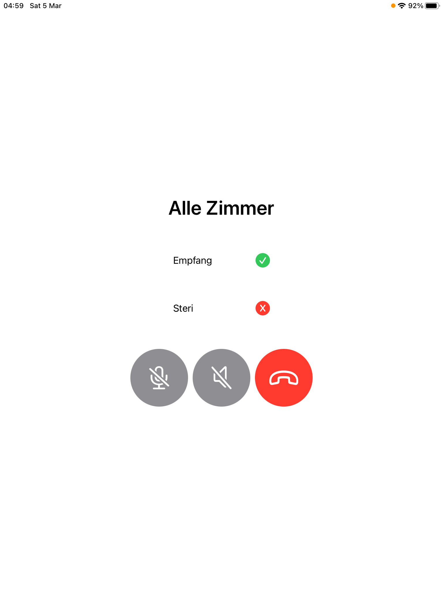

Integration von Sprachübertragung und Sprachsynthese in ein bestehendes, cloudbasiertes Praxisrufsystem
Ziel dieser Arbeit ist es, Sprachübertragung für eine Gegensprechanlage und Sprachsynthese für Benachrichtigungen in ein bestehendes cloudbasiertes Praxisrufsystem zu integrieren.
Dieses Projekt ist eine Fortsetzung des IP5 "Cloudbasiertes Praxisrufsystem". Mit dem Vorgängerprojekt wurde ein cloudbasiertes Rufsystem entwickelt, welches es ermöglicht konfigurierbare Benachrichtigungen zu versenden. Mit diesem IP6 wird das Rufsystem weiterentwickelt. Die bestehende mobile Applikation wird neu als native iOS Applikation umgesetzt. Weiter werden die Funktionen Gegensprechanlage und Sprachsynthese für empfangene Benachrichtigungen in das System integriert.
Das bestehende Praxisrufsystem wurde um neue Funktionen erweitert. Die mobile Applikation wurde neu als native iOS Applikation entwickelt. Dabei wurde alle Funktionen aus dem Vorgängerprojekt neu für die native App implementiert.

Die Integration von Sprachsynthese mit Amazon Polly ermöglicht es, empfangene Benachrichtigungen automatisch vorlesen zu lassen. Die Integration von Sprachverbindungen mit WebRTC ermöglicht es, Anrufe zwischen Endgeräten zu starten. Dabei können Sprachverbindungen als 1:1 Verbindung zwischen genau zwei Geräten oder als 1:m Verbindungen zwischen beliebig vielen Geräten aufgebaut werden.
Sowohl das Empfangen von Anrufen, als auch das Vorlesen von Benachrichtigungen können von Endnutzern in der App deaktiviert werden. Welche Buttons für Benachrichtigungen und Sprachverbindungen Endnutzern zur Verfügung stehen, kann über eine Weboberfläche konfiguriert werden.
Projektdauer: 20.09.2021 bis 25.03.2022
Aufwand in Personenstunden: 360 Stunden
Teamgrösse: 1 Person
Prof. Daniel Jossen
FHNW Hochschule für Technik
Bahnhofstrasse 6
5210 Windisch